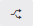
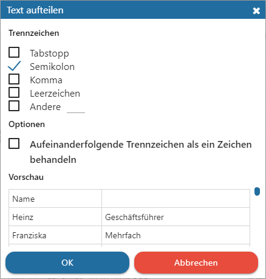
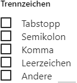

Ø

Text aufteilen (STRG + E)Das Tool "Text aufteilen" ermöglicht die Aufteilung von Zelleninhalt mit Hilfe eines Trennzeichens in mehrere Zellen. Hierfür werden zunächst die entsprechenden Zellen oder die komplette Spalte markiert und der Button "Text aufteilen" gedrückt. Alle weiteren Einstellungen finden im Fenster "Text aufteilen" statt.
Eigenschaftsfenster "Text aufteilen"

Folgende Einstellungen und Parameter können hinterlegt werden:
Trennzeichen

Ø Tabstopp / Semikolon / Komma / Leerzeichen / Andere
An dieser Stelle muss das Trennzeichen gewählt werden, d.h. jenes Zeichen, aufgrund dessen eine Aufteilung erfolgen soll.
Optionen
Ø Aufeinanderfolgende Trennzeichen als ein Zeichen behandeln
Wenn sich das Trennzeichen oft wiederholt, so kann durch Aktivierung dieser Option nur das ersten Trennzeichen für eine Aufteilung verwendet werden.
Vorschau
Ø Vorschau
An dieser Stelle wird eine Vorschau auf Grundlage der gewählten Zellen und des Trennzeichens ausgegeben.
Buttons
Ø Ok
Durch Anwahl des Buttons "Ok" wird die Aufteilung durchgeführt.
Ø Abbrechen
Durch Anwahl des Buttons "Abbrechen" bzw. der Taste ESC wird das Fenster geschlossen.